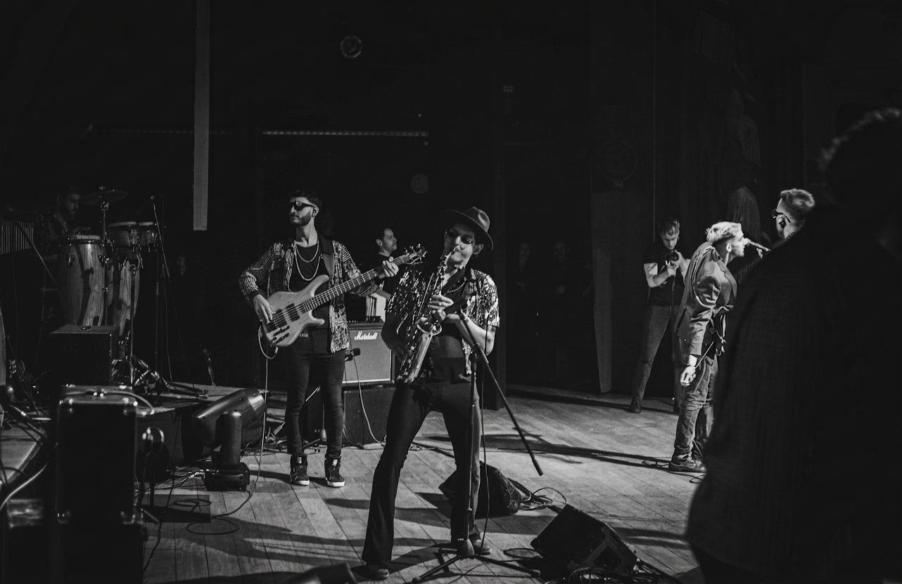
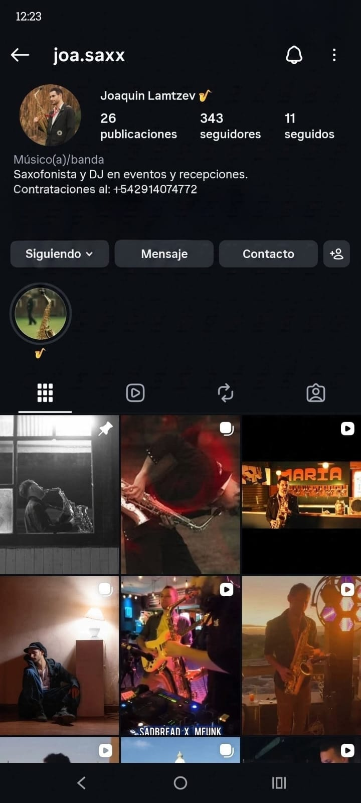

Joa Lamtzev esculpe la atmósfera de veladas exclusivas a través del saxofón. Una curaduría sonora impecable donde el virtuosismo clásico se entrelaza con la sofisticación moderna y los ritmos de vanguardia.
Propuestas escénicas personalizadas para elevar cada atmósfera al máximo estándar.
Interpretaciones de saxofón en vivo diseñadas para acompañar distintos momentos del evento con elegancia y presencia.
Consultar Formato Sax Live ↗Potente show en vivo que fusiona el sonido orgánico del saxofón con frecuencias electrónicas y beats de club contemporáneos.
Consultar Formato DJ Set ↗
Experiencia musical compuesta íntegramente a medida. Formación instrumental personalizada y ensamble exclusivo para la ocasión.
Consultar Formato DJ Live Set Sax ↗Presentaciones en eventos corporativos y hoteles de lujo de Sudamérica:
Saxofón Alto Yamaha YAS-62 · Consola Pioneer XDJ-RR · Sistema in-ear e inalámbrico adaptable a cualquier escenario.
Backstage de ensayos, registros de galas privadas en resorts de Sudamérica y nuevas exploraciones sonoras de saxofón contemporáneo.
